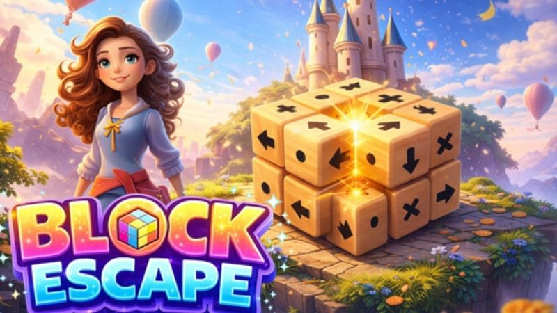
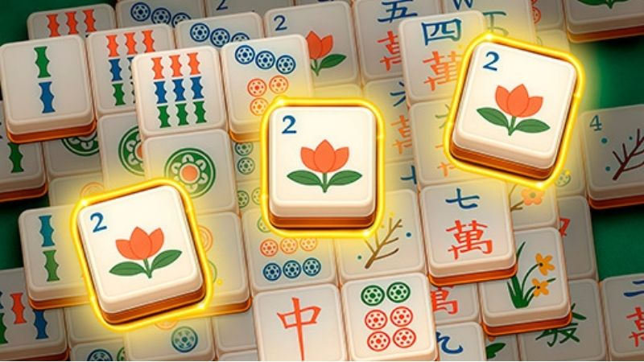
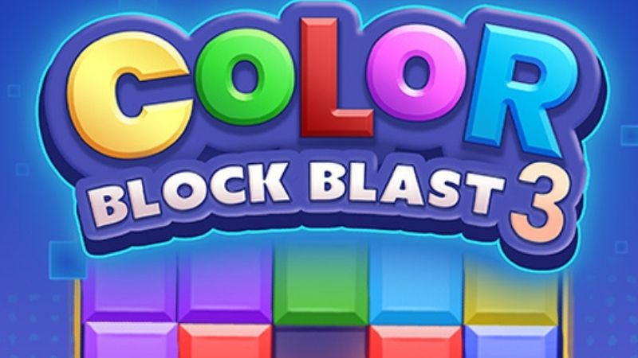
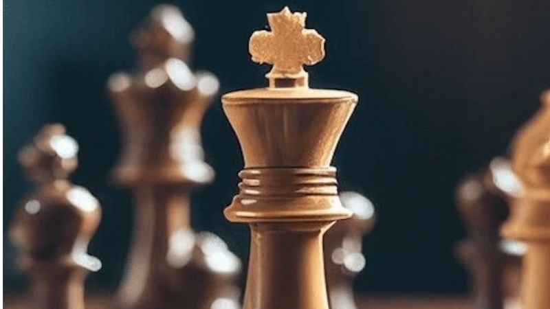
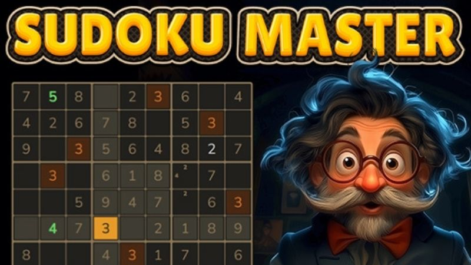
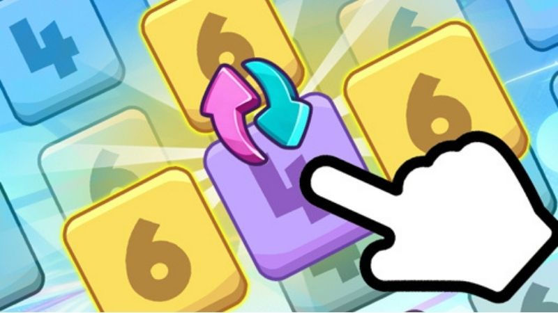

🧠 Ücretsiz Online Zeka Oyunları
Zeka oyunları, aceleyle değil düşünerek oynanan oyunlardır. Bu kategoride masa oyunu uyarlamaları, sayı bulmacaları, taş eşleştirme ve blok yerleştirme gibi farklı türler bulunur. Ortak yönleri, doğru hamleyi bulmak için ekrana bakıp plan yapmanızı gerektirmeleridir.
Bu tür oyunların güzel yanı, hız baskısının çoğu zaman düşük olmasıdır. İstediğiniz kadar düşünebilir, hatalarınızdan öğrenebilir ve zorluk seviyesini kendinize göre ayarlayabilirsiniz. Yeni başlıyorsanız kolay seviyelerden başlayıp kuralları oturttuktan sonra zorlaşmak, motivasyonu korumanın en iyi yoludur.
Bu kategoride 7 oyun var

Zeka
Grand Mahjong Connect
Grand Mahjong Connect, klasik Mahjong deneyimini bağlantı bulmacalarıyla birleştiren eğlenceli bir zekâ oyunudur. Aynı sembollere sahip taşları doğru sırayla eşleştirerek tüm bölümü tamamlamaya çalışın. Dikkat, hız ve strateji gerektiren bu oyun mobil ve bilgisayarda tamamen ücretsiz oynanabilir.
🎮 Hemen Oyna
Zeka
Color Block Blast 3
Color Block Blast 3, renkli blokları doğru şekilde yerleştirerek yüksek puan yapmaya çalıştığınız bağımlılık yapan bir bulmaca oyunudur. Planlama yeteneğinizi geliştirirken eğlenceli vakit geçirebilirsiniz.
🎮 Hemen Oyna
Zeka
3D Chess Master
3D Chess Master, gelişmiş yapay zekâya karşı satranç oynayabileceğiniz kaliteli bir masa oyunudur. Başlangıç seviyesinden uzman seviyesine kadar farklı zorluk seçenekleri sunar.
🎮 Hemen Oyna
Zeka
Sudoku Master
Sudoku Master, farklı zorluk seviyelerinde sayı bulmacaları çözerek mantık becerilerinizi geliştirebileceğiniz klasik sudoku oyunudur. Günlük zihinsel egzersiz yapmak isteyen oyuncular için ideal bir seçimdir.
🎮 Hemen Oyna
Zeka
Number Merge Master
Number Merge Master, aynı sayıları birleştirerek daha büyük sayılar elde etmeye çalıştığınız bağımlılık yapan bir bulmaca oyunudur. Planlama ve dikkat gerektiren yapısıyla uzun süre keyifli vakit geçirmenizi sağlar.
🎮 Hemen OynaZeka
Mahjong Classic
Mahjong Classic, aynı taşları eşleştirerek tüm tahtayı temizlemeye çalıştığınız klasik mahjong oyunudur. Farklı zorluk seviyeleriyle hem yeni başlayanlar hem de deneyimli oyuncular için uygundur.
🎮 Hemen OynaZeka oynarken işe yarayan öneriler
- Hamle yapmadan önce hamlenin hemen sonraki durumunu düşünün.
- Kolay görünen hamleyi hemen yapmayın; ileride yaratacağı boşluğu hesaba katın.
- Takıldığınızda kısa bir mola verip tahtaya yeniden bakmak çoğu zaman çözümü gösterir.
Daha ayrıntılı bilgi için Bulmaca Oyunlarında Hamleleri Önceden Planlama rehberini okuyabilirsiniz. Tüm oyunları görmek için ana sayfaya dönebilirsiniz.
Diğer kategoriler
🚗 Araba🏍️ Motor⚽ Futbol🏃 Parkour🎯 Aksiyon🏆 Spor🃏 Kart🚜 Simülasyon🧩 Bulmaca🗺️ Macera🕹️ Arcade